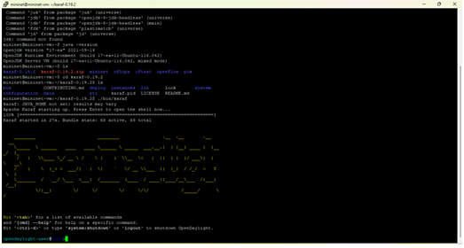
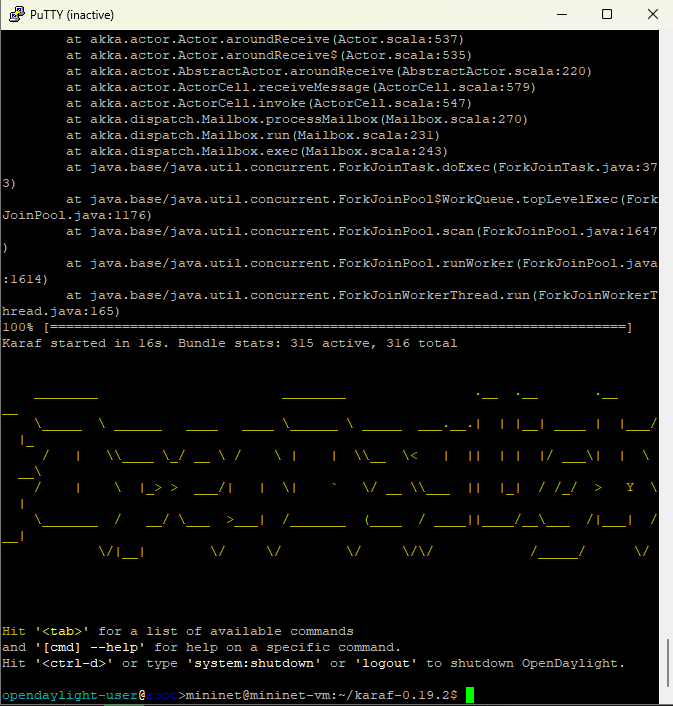

Asignatura: Configuración de redes
Tema: OpenDaylight (ODL)
Autor: Jose Miguel Castaño Padilla
El proyecto OpenDaylight es una plataforma de código abierto para redes definidas por software (SDN) que utiliza protocolos abiertos para proporcionar control programático centralizado y monitoreo de dispositivos de red.
La arquitectura de OpenDaylight (ODL) está basada en una estructura modular y orientada a servicios. Está diseñada para ofrecer flexibilidad, escalabilidad y compatibilidad con distintos controladores y dispositivos de red.
Componentes clave del núcleo:
ifconfigEsto mostrará nuestra dirección IP.
192.168.101.10En la sección X11 de PuTTY, agregamos localhost.0 y luego abrimos la conexión.
Ahora, dentro de PuTTY, ejecutamos los siguientes comandos:
sudo apt update && sudo apt upgrade -y
sudo apt update
sudo apt install wget -y
sudo apt install software-properties-common -y
sudo add-apt-repository ppa:openjdk-r/ppa -y
sudo apt update
sudo apt install openjdk-17-jdk -y
Verificar la versión instalada:
java -versionwget https://nexus.opendaylight.org/content/repositories/opendaylight.release/org/opendaylight/integration/karaf/0.19.2/karaf-0.19.2.zip
unzip karaf-0.19.2.zip
cd karaf-0.19.2
./bin/karaf
Una vez ejecutamos todos estos comandos tendríamos nuestra instalación de OpenDaylight (ODL).
Para cerrar OpenDaylight:
logoutHola respecto al final de OpenDaylight tuve un problema que se me ha bloqueó la máquina virtual y he intentado varias veces arreglarla y no he podido aquí le muestro el final:
En este trabajo se pudo evidenciar que la configuración de OpenDaylight (ODL) es fundamental porque garantiza un control eficiente, seguro y automatizado de toda la infraestructura de red, permitiendo aprovechar al máximo la ventaja de la arquitectura SDN.
En esta guía se realizo el paso a paso de la configuración de OpenDaylight, donde primero se debe realizar la actualización del sistema para nuestra configuración de OpenDaylight, seguidamente nos pide obligatoriamente instalar jdk, posteriormente descargamos OpenDaylight y por último una vez descargado descomprimimos nuestro archivo e iniciamos OpenDaylight gracias a todo este proceso se realizó correctamente nuestra instalación.
En conclusión, esta guía no solo consolida los fundamentos teóricos, si no también ofrece una base practica para futuras implementación y comparaciones con otros controladores similares.